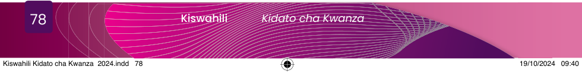

Faharasa
| Ada | mazoea katika utendaji wa jambo |
| Ambaa | kaa mbali na kitu au mtu |
| Anuai | mbalimbali |
| Bwaga | tuliza moyo |
| Chochea | tia hamu au shauku ya kufanya kazi |
| Dadisi | peleleza jambo kwa kuulizauliza |
| Dhibiti | weka chini ya mamlaka |
| Dhihaki | fanyia mtu mzaha |
| Dhima | wajibu aliopewa mtu katika utekelezaji wa jambo |
| Diplomasia | kanuni na utaratibu wa kuanzisha na kuendeleza uhusiano baina ya mataifa |
| Eksirei | mionzi inayoweza kupenya kwenye vitu na kuonesha vilivyomo ndani au kutoa picha za vitu vilivyomo |
| Fariji | mpa mtu utulivu baada ya kuwa katika huzuni |
| Fubaza | punguza nguvu za kuathiri |
| Jitanibu | jitenga kando au jiweka mbali na mji |
| Kodi | fedha inayotozwa na serikali |
| Kumbana | fikwa na jambo aghalabu baya |
| Madhila | mateso au taabu |
| Majeruhi | mtu au watu walioumia |
| Mandhari | sura ya mahali, aghalabu ardhi, panavyoonekana |
| Mapato | kitu kinachopatikana hasa baada ya kazi au biashara |
| Matini | andiko linalohusu jambo fulani |
| Mbiu | wito |
| Memeta | toa mwangaza unaowaka na kuzima kwa mfululizo |
| Menyeka | fanya kazi sana; jisumbua kwa kufanya kazi |
| Mfumo | utaratibu wa utendaji au utekelezaji wa jambo au mambo |
| Mkasa | jambo au tukio baya linalomfika mtu. Mfano; msiba, maafa au ajali |
| Mkondoni | kuwa katika hali ya kuunganishwa na mtandao wa kompyuta au vyombo vingine |
| Muktadha | mazingira au hali ambamo tukio au jambo hutendeka |
| Mwiko | jambo lisilofanywa na mtu au jamii kwa mujibu wa imani, utamaduni au desturi zao |

Kiswahili
Kidato cha Kwanza